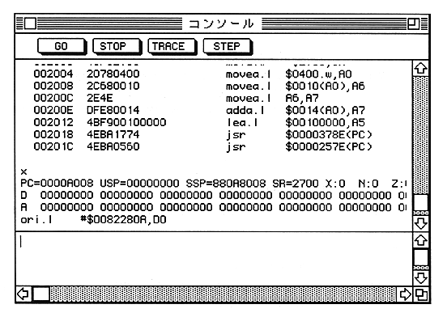

console environment is an operating environment that uses a character terminal-oriented interface.
Enter commands from the keyboard to proceed to the following console window. These commands are called console commands.

For how to display the console window and how to operate it, see “Menu Environment” below.
Use the following terms in the description:
range Two comma-separated expressions that specify a range of addresses or values.
The first expression is called from, the latter is called to, and the range of values is
from <= value <= to
It becomes.
regexp A string containing any number of wildcard characters '?' And '*'.
Used especially when specifying multiple symbols.
In addition, arguments enclosed in [] of the command can be omitted.